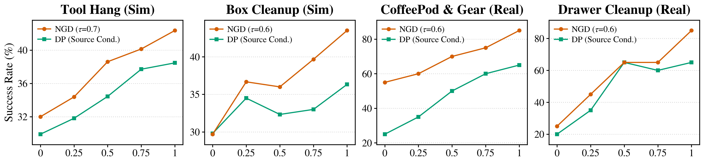
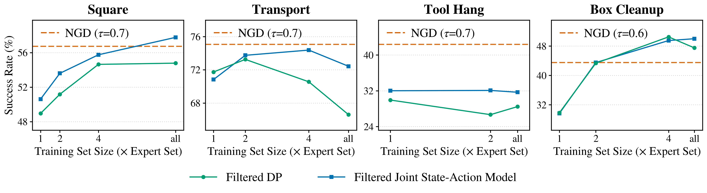

We introduce Noise-Gated Diffuser (NGD), a generative control framework that selectively draws supervision from prior experience beyond limited expert demonstrations. NGD jointly models actions and a compact future-state latent with independent noise levels, inherently defining a two-dimensional noise plane that connects behavior imitation and dynamics modeling through a continuum of learning objectives. We use noise thresholds to select which regions receive supervision from each data source, with a learned embedding making the source identity explicit to the model. This mechanism provides continuous control over which learning objectives are supervised by prior experience, allowing us to extract useful transition structure while limiting the influence of suboptimal behavior.
We study how the noise threshold $\tau$ applied to prior experience affects performance on simulated and real-robot manipulation tasks.
Without quality labels on the target task, NGD with an intermediate threshold achieves the best performance across all evaluated settings.
On real-robot tasks, NGD with an intermediate threshold completes the tasks, while the baselines either fail to approach the target object or execute imprecise grasps.
We further study how the amount of prior experience affects NGD performance. In the results below, we show that NGD scales effectively with prior experience, improving faster than the baseline as more prior data is incorporated.

Moreover, NGD remains competitive with baselines trained on trajectories filtered by oracle trajectory-level success labels, showing its robustness to suboptimal behavior in prior experience.

@article{zeng2026ngd,
author = {Zeng, Zilai and Jonnalagadda, Chandradithya S and Yin, Patton and Jia, Mingxi and Tang, Zitian and Tellex, Stefanie and Luo, Calvin and Du, Yilun and Sun, Chen},
title = {Noise-Gated Learning from Prior Experience for Generative Control},
journal = {arXiv},
year = {2026},
}